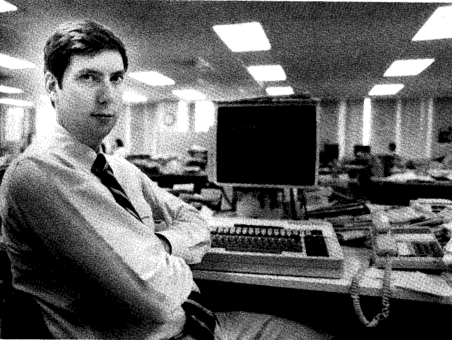
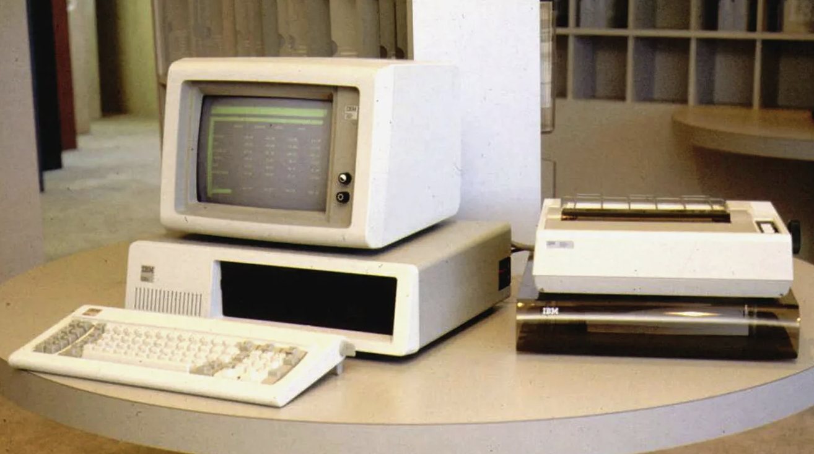
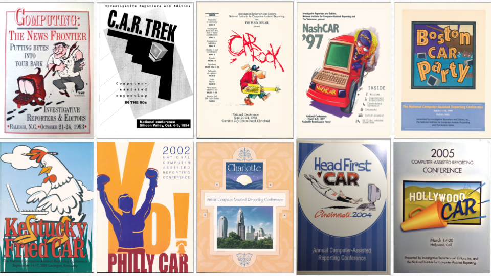
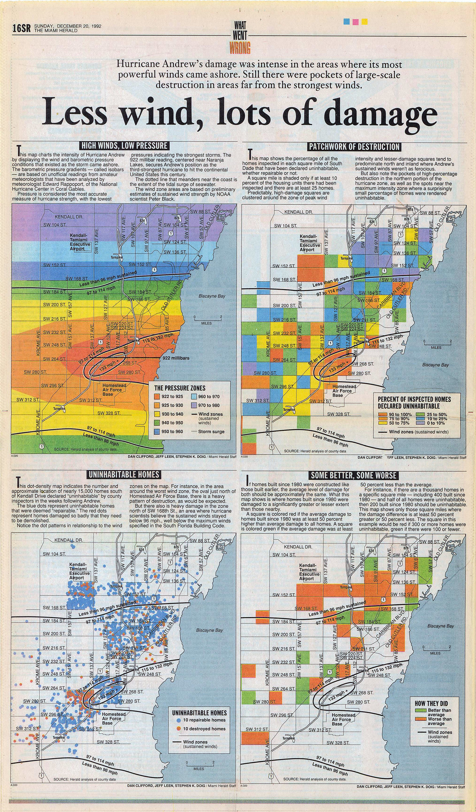

In 1988, investigative journalist Bill Dedman embarked on a five-month long project that would change the course of his career, and the field of journalism as a whole. Dedman dove into a trove of data on the lending practices of Atlanta’s major banks and loan institutions, and what Dedman found was alarming: financial institutions did not lend in middle-class or more affluent black neighborhoods despite lending in the poorest white neighborhoods of Atlanta (Power Reporting).
Dedman, who was then a reporter for the Atlanta Journal-Constitution, was no stranger to hard-hitting reporting. But what set this investigation apart was the sheer scale of the data he had to work with. With thousands of pages of loan applications and other data to comb through, Dedman knew that he couldn't do it alone. So he turned to a new tool in the journalist's arsenal: the computer.
Using specialized software and more powerful computer technology, Dedman was able to analyze the data in ways that would have been impossible just a few years earlier. He was able to identify patterns and discrepancies that pointed to redlining and widespread discrimination. The resulting series of articles, titled “The Color of Money” was published between May 1-4, 1988 (Power Reporting). “The Color of Money” resulted in significant changes such as the introduction of expanded federal laws that mandated the disclosure of loan data and new financing options for middle-income homebuyers (Power Reporting).
The impact of “The Color of Money” was profound, not just in terms of the issues it brought to light, but also in terms of the way it revolutionized the field of journalism. This series won the 1989 Pulitzer Prize for Investigative Reporting (Power Reporting), which brought computer-assisted reporting to the limelight. Computers were now being used to make sense of vast amounts of data, and the possibilities for investigative reporting seemed endless.
While the idea of using data to support reporting may have seemed new in the 1980s, it was not entirely without precedent. One of the earliest pioneers of data journalism was Ida B. Wells, who was born over a century before the emergence of the personal computer. Wells’ groundbreaking investigative reporting on lynching in the late 19th century, which consisted of collecting and analyzing data on incidents across the country, exposed the brutal reality of this violent practice and advocate for change (Lind). Her work is a testament to the power data journalism holds to uncover hidden truths and hold those in power accountable for their actions. What was new was the technology that made it possible to analyze data on a much larger scale, and with much greater speed and accuracy.
Computer-assisted reporting has had a profound impact on journalism, bringing together themes of technology, ethics, trust, credibility, power, and diversity. The rise of data-driven reporting has required journalists to grapple with ethical considerations around privacy and accuracy, while also building trust and credibility with their audiences. The unbalanced distribution of computer-assisted reporting as a journalistic practice also highlighted issues of diversity and representation in newsrooms. As new technologies like artificial intelligence emerge, the lessons learned from the rise of computer-assisted reporting can help inform best practices for responsible and effective use of these tools. By continuing to prioritize ethical standards, audience needs, and diverse perspectives, journalists can continue to harness the power of computer technology to drive impactful and meaningful reporting in the years to come.
While the rise of computer-assisted reporting in the 1980s and 1990s was undoubtedly groundbreaking, the use of computers in journalism dates back much further than many realize. As early as 1952, CBS News utilized a UNIVAC mainframe computer to predict the outcome of the presidential election (CBS News). Fast forward to the 1967 Detroit riots, and we see another example of the potential of computer technology in reporting (Robertson). Philip Meyer, a national correspondent for the Knight Ridder newspaper chain, used a mainframe computer to analyze survey data in the aftermath of the Detroit riots, producing groundbreaking reporting that shed light on the underlying issues at play (Rosegrant). However, the use of computers in journalism during this time was rare, due in large part to the high cost and time-consuming nature of using a mainframe computer (DeFleur).
The release of the IBM Personal Computer in 1981 (“The PC: Personal Computing Comes of Age”) marked a turning point in the history of computer-assisted reporting (Parasie). With a smaller footprint and a more affordable price point than earlier mainframe computers, the IBM PC made it possible for more journalists to experiment with using computers for reporting (Parasie). This new technology allowed reporters to learn new skills and analyze data in ways that would have been impossible just a few years prior. As more and more journalists began to adopt the technology, a new era of data-driven journalism was born.
In the early days of personal computers, their cost was still prohibitively high for many smaller and less well-funded newspapers, limiting their access to this technology. The original price tag of personal computers during that time ranged from $1,565 to $3,000 (Comen), which was a significant investment for many organizations. When accounting for inflation using the U.S. Bureau of Labor Statistics’ CPI Inflation Calculator, this translates to a current cost of $5,073 to $9,724. The high cost of personal computers made it difficult for small newspapers to compete with larger media outlets that had greater financial resources. This limitation may have contributed to a digital divide in the media landscape, where some organizations had access to cutting-edge technology while others were left behind.
In the early days of computer-assisted reporting, a handful of trailblazing journalists paved the way for the data-driven journalism we see today. While some developed new and innovative ways to visualize or synthesize data, others used data analysis techniques to cover taboo subjects or uncover societal inequities. Some notable examples include Tim Novak and George Landau’s 1990 report on “phantom voters” and election fraud in St. Louis, Illinois (Novak and Landau) and the Raleigh News & Observer’s 1995 Pulitzer-winning investigation, “The Power of Pork”, which explored environmental and health risks associated with North Carolina’s pork industry (Garrison, “Computer-Assisted Reporting”).
Elliot Jaspin's innovative work as an investigative reporter for the Providence Journal in the 1980s, including the development of the software tool Nine Track Express, played a crucial role in paving the way for the rise of computer-assisted reporting and data-driven journalism. Jaspin analyzed about 35,000 records from the Rhode Island Housing and Mortgage Finance Corporation, and uncovered a disturbing trend: the largest and lowest-interest loans were not going to the families in the greatest need, but rather to children of high-ranking state officials (DeFleur). In a separate investigation, Jaspin and fellow reporter Maria Johnson cross-referenced a database of Rhode Island school bus drivers with traffic and criminal violations, which prompted the state to revamp its licensing procedures (DeFleur). They found that more than 25% of bus drivers had at least one traffic violation, with some having invalid licenses and some being charged with driving under the influence (DeFleur).
Another one of Jaspin's significant contributions was the development of a software tool called Nine Track Express, which was made possible with the help of Dan Woods –– another journalist with a background in computer science (Usher). The Nine Track Express was a piece of software that downloaded data from 9-track tapes onto a PC and formatted it for database programs, making it much easier for journalists to analyze data (Usher).
By 1989, Jaspin launched the Missouri Institute for Computer-Assisted Reporting at the University of Missouri, which later became the National Institute for Computer-Assisted Reporting or NICAR (Berret and Phillips). NICAR has been instrumental in empowering journalists with computational skills through its conferences and boot camps. Early attendees of NICAR boot camps were dubbed “missionaries” as they took back the skills they learned to their respective newsrooms and shared their knowledge with fellow reporters (Berret and Phillips). For many years, these conferences and boot camps were the only opportunities for journalists to experiment with and master new techniques in computational journalism (Berret and Phillips).
Jaspin's work, including the establishment of NICAR, and the development of Nine Track Express helped to lay the groundwork for the rise of computer-assisted reporting in the 1980s and 1990s. By demonstrating the power of data analysis and making it more accessible to reporters, Jaspin helped to create a new paradigm in journalism.
In 1993, the Miami Herald received the Pulitzer Prize for Public Service for a 16-page special report that explored the damage caused by Hurricane Andrew in 1992. The reporting team analyzed weather records and building inspection reports, and found that the damage caused by the hurricane varied by neighborhood due to lax building codes and inspections.
Steve Doig, a reporter who worked on this project, is considered a pioneer in the use of computerized mapping software in journalism. Through his analysis, Doig was able to demonstrate the potentially catastrophic consequences of Hurricane Andrew making landfall just 20 miles further north. His maps showed that the storm would have torn through Miami, causing significantly more physical damage and potentially tripling the death toll (Johnson). He used the same technology to create maps that matched geographic-specific wind speeds with building damage reports. What he found was surprising –– there was more damage in areas that had experienced lower wind speeds. As a result, The Miami Herald determined that other factors, such as building design and construction materials, played a significant role in determining the impact of the storm (Johnson).
Doig's use of data and mapping technology to analyze the effects of Hurricane Andrew was groundbreaking. His work demonstrated the power of data-driven journalism to provide readers with a more nuanced understanding of complex events. It also paved the way for the use of computerized mapping software in newsrooms across the country, as journalists recognised the potential of this technology to uncover new insights and tell important stories.
In 1998, the United States marked the 25th anniversary of the landmark Supreme Court case Roe v. Wade, which legalized abortion nationwide. To mark the occasion, Rose Ciotta, who was the CAR editor for The Buffalo News, delved into data on 45,000 abortions performed in New York (Ciotta, “The Abortion Decision”). Her goal was to explore the trends over time, the political debate surrounding abortion, and the changing attitudes of society towards the contentious issue.
Through her research, Ciotta uncovered a startling revelation: access to abortions in Western New York had declined over time (Ciotta, “Abortion Options”). This meant that women in the region were being forced to travel long distances to access safe and legal abortions (Ciotta, “Abortion Options”). Ciotta's reporting on this issue shone a light on the challenges faced by women seeking reproductive healthcare in certain parts of the country, and the impact that restrictive laws and policies could have on their lives. Ciotta's reporting is a prime example of using data to tell human stories. By analyzing the data on abortions in New York, she was able to reveal the human impact of political decisions and societal attitudes.
During her time at The Buffalo News, Ciotta also covered population changes using Census data (Ciotta and Schulman) and mortgage lending discrimination (Ciotta and Schroeder). In 1995, Ciotta found that lenders denied mortgage applications from Black and Hispanic applicants at a higher rate than applications from white applicants (Ciotta and Schroeder). As a CAR editor and Investigative Reporters and Editors (IRE) director, Ciotta was at the forefront of the movement to use data and investigative techniques to uncover stories that would otherwise go untold.
As computer-assisted reporting has become more prevalent in the journalism industry, concerns have arisen about the resources required to invest in CAR projects. Many newsrooms find themselves unable to commit to the long-term investment required for CAR, leading to a gap between the resources of larger newsrooms that can afford to undertake extensive CAR projects and smaller newsrooms that cannot (Rom). Additionally, concerns about training and legal risks have led some journalists to feel that getting too involved in CAR will disconnect them from the newsroom and their everyday sources (Rom).
Another challenge facing the implementation of CAR in newsrooms is the lack of diversity. The stories that data journalists tell are influenced by their own experiences and perspectives, but the field remains predominantly white and male-domainted (“State of Data Journalism 2022”). Without a diverse range of voices and viewpoints, important stories may go untold, and crucial perspectives may be overlooked.
Despite the widespread adoption of data journalism practices, journalism college programs have also been slow to incorporate these practices into their curricula, which makes it harder to recruit more diverse individuals to pursue this type of journalism. A 2016 report, which was a joint effort between the Knight Foundation and the Columbia Journalism Review, found that of the 113 college-level journalism programs accredited by the The Accrediting Council on Education in Journalism and Mass Communications (ACEJMC), 59 offered at least one data journalism course (Berret and Phillips). Of those 59 programs, 27 offered one course, which was usually at the introductory level, according to the report (Berret and Phillips). Only 18 ACEJMC-accredited journalism programs offered three or more courses in data or computational journalism (Berret and Phillips).
At some journalism colleges, including the University of Maryland’s Philip Merrill College of Journalism and the University of Florida’s College of Journalism and Communication –– CAR or data journalism classes are electives. This means students must seek those courses out rather than being exposed to them as part of their core curriculum.
Finally, low entry-level salaries may discourage individuals who are computer-savvy from pursuing a career in journalism (Rom). As technology continues to play an increasingly important role in the industry, journalists with strong computer skills will be in high demand. However, the salaries offered to entry-level reporters may not be enough to entice these individuals away from other, higher-paying career paths. As a result, newsrooms may struggle to recruit the kind of talent they need to fully embrace CAR and other computer-assisted reporting practices.
In 1998, Bruce Garrison –– a long-time author of journalism and mass communication books –– outlined several reasons why newsrooms should adopt CAR, which included increased productivity, increased quality of local reporting, and cost savings in information gathering (Garrison, “Computer-Assisted Reporting”). While the benefits of CAR in newsrooms remain relevant today, data journalism has evolved to include artificial intelligence (AI) as a tool for advanced data-oriented reporting. Similar to the adoption of early computer technology for data analysis and visualization, journalists are now experimenting with AI to further enhance their reporting.
The Boston Globe, for example, is exploring the use of AI tools, such as Dall-E and Midjourney to produce imagery for stories, according to Matt Karolian, the general manager of Boston.com and platform partnerships (Roy). Similarly, The Los Angeles Times made headlines in 2014 because of Quakebot, an algorithm created by journalist and programmer Ken Schwencke, that automatically wrote stories on earthquakes over a 3.0 magnitude (Levenson). While challenges regarding ethics and best practices remain with the use of AI in journalism, its potential to further enhance data-driven reporting is clear.
From humble beginnings with the UNIVAC mainframe to the sophisticated algorithms of modern artificial intelligence, technology has revolutionized the way journalists gather and report news. The rise of computer-assisted reporting has taught us that the power of technology can help us tell better stories. But it has also taught us that technology alone is not enough. At the heart of every good story lies a curious, compassionate, and committed journalist who is willing to dig deep to find the truth.
The rise of computer-assisted reporting has transformed the landscape of journalism by enabling journalists to analyze vast amounts of data quickly and accurately. With the emergence of AI technologies, such as natural language processing and machine learning, journalism is poised to take another leap forward. AI has the potential to automate routine tasks, enhance the quality of reporting, and provide deeper insights into complex issues. But it's important to remember that while these technologies can enhance the work of journalists, they cannot replace the human intuition, empathy, and creativity that are essential to good reporting. As with any technology, there are concerns about how AI will impact the industry, including the potential loss of jobs and the ethical considerations surrounding the use of algorithms in decision-making. As such, it is imperative that journalists and news organizations approach the adoption of AI with caution, and prioritize transparency, accountability, and ethical considerations in its implementation. Ultimately, the future of journalism and AI is intertwined, and it will be up to the industry to embrace this powerful technology while ensuring that it is used responsibly and ethically to uphold the highest standards of journalism.
Barnett, Tracy L. 100 Selected Computer-Assisted Investigations. Investigative Reporters and Editors, 1995.
Barnett, Tracy, and Andrew Scott. The Investigative Journalist's Morgue: Index to Stories and Series from the Files of Investigative Reporters & Editors, Inc. Investigative Reporters and Editors, 1993.
Behrens, John C. The Typewriter Guerillas. Nelson-Hall Inc., 1978.
Berret, Charles, and Cheryl Phillips. Columbia School of Journalism, 2016, Teaching Data and Computational Journalism, https://columbiajournalism.gitbooks.io/teaching-data-computational-journalism/content.
Bowen, Ezra. “New Paths to Buried Treasure: Computers Are Revolutionizing Investigative Journalism.” Time Magazine, 7 July 1986, pp. 56.
Ciotta, Rose. “The Abortion Decision: A Quarter-Century of Heart-Rending Choices.” The Buffalo News, 18 Jan. 1998.
Ciotta, Rose. “Abortion Options Decline Dramatically for Area Women.” The Buffalo News, 18 Jan. 1998.
Ciotta, Rose. “Baby You Should Drive This Car.” American Journalism Review, American Journalism Review, Mar. 1996, https://ajrarchive.org/Article.asp?id=1293.
Ciotta, Rose, and Richard Schroeder . “Area Lenders Have a Way to Go for Equality in Mortgage Access.” The Buffalo News, 29 Jan. 1995, https://buffalonews.com/news/area-lenders-have-a-way-to-go-for-equality-in-mortgage-access/article_2ce5bad3-1c16-5445-b4d4-c422bc12f521.html.
Ciotta, Rose, and Susan Schulman. “Erie County Population Dips, Niagara's Rises Slightly.” The Buffalo News, 8 Mar. 1996, https://buffalonews.com/news/erie-county-population-dips-niagaras-rises-slightly/article_389d23ba-b8c5-506b-bd9e-774b866e11c3.html.
The Color of Money, Power Reporting, https://powerreporting.com/color/.
Comen, Evan. “Check out How Much a Computer Cost the Year You Were Born.” USA Today, Gannett Satellite Information Network, 22 June 2018, https://www.usatoday.com/story/tech/2018/06/22/cost-of-a-computer-the-year-you-were-born/36156373/.
“A Computer Reporter.” Newsweek, 26 Aug. 1968, pp. 78–80.
Day, Aasma. “Not an Anomaly: On Diversifying Data Journalism.” The Bureau of Investigative Journalism, The Bureau of Investigative Journalism, 6 Nov. 2017, https://www.thebureauinvestigates.com/blog/2017-11-06/my-experience-is-not-an-anomaly-we-need-to-diversify-data-journalism-and-all-newsrooms.
“Deciding Desegregation: A Continuing Series.” The Charlotte Observer, 13 Jan. 1999.
DeFleur, Margaret H. Computer-Assisted Investigative Reporting: Development and Methodology. Lawrence Erlbaum Associates, Inc., 1997.
Downie, Leonard. The New Muckrakers. New Republic Book Company, Inc., 1976.
Garrison, Bruce. Computer-Assisted Reporting. Lawrence Erlbaum Associates, Inc., 1998.
Garrison, Bruce. “Computerization of the Newspaper in the 1980’s.” Ecquid Novi: African Journalism Studies, vol. 4, no. 1, 1983, pp. 27–46., https://doi.org/10.1080/02560054.1983.9652915.
Houston, Brant. Data for Journalists: A Practical Guide for Computer-Assisted Reporting. Routledge, 2019.
Houston, Brant. “The History of Data Journalism.” DataJournalism.com, European Journalism Centre, 13 Dec. 2021, https://datajournalism.com/read/longreads/the-history-of-data-journalism.
Jaspin, Elliot, et al. “R.I. System Fails to Fully Check Driving Records of Bus Applicants.”The Providence Sunday Journal, 11 May 1986.
Johnson, JT. “Wind of Change.” The Guardian, Guardian News and Media, 3 July 2000, https://www.theguardian.com/media/2000/jul/03/newmedia.mondaymediasection2.
Levenson, Eric. “L.A. Times Journalist Explains How a Bot Wrote His Earthquake Story for Him.” The Atlantic, Atlantic Media Company, 17 Mar. 2014, https://www.theatlantic.com/technology/archive/2014/03/earthquake-bot-los-angeles-times/359261/.
Lind, Dara. “Ida B. Wells Used Data Journalism to Fight Lynching.” Vox, Vox, 16 July 2015, https://www.vox.com/2015/7/16/8979771/ida-b-wells-lynching-data.
Locke, Wilson R. “Telecommunication in the News Industry: The Newsroom Before and After Computers.” People and Technology in the Workplace , 1991, pp. 279–295., https://doi.org/10.17226/1860. Accessed 10 Mar. 2023.
“A Look Back to the Dawn of TV Election Coverage in 1952.” CBS News, YouTube, 5 Nov. 2016, https://www.youtube.com/watch?v=abibiFa3gj0. Accessed 10 Mar. 2023.
Meyer, Philip. Precision Journalism: A Reporter's Introduction to Social Science Methods. Rowman & Littlefield, 2002.
Novak, Tim, and George Landau. “Dead or Alive: City's Ineligible Voters Number in Thousands.” St. Louis Post-Dispatch, 9 Sept. 1990.
Parasie, Sylvain. Computing the News: Data Journalism and the Search for Objectivity. Columbia University Press, 2022.
“The PC: Personal Computing Comes of Age.” IBM100 - The PC, International Business Machines Corporation, https://www.ibm.com/ibm/history/ibm100/us/en/icons/personalcomputer/.
O'Neil, Daniel X. “Complete Scans of ‘What Went Wrong.’” Derivative Works, 10 Sept. 2008, https://www.derivativeworks.com/2008/09/complete-scans.html.
Robertson, Cameron. “Reading the Riots: How the 1967 Detroit Riots Were Investigated.” The Guardian, Guardian News and Media, 9 Dec. 2011, https://www.theguardian.com/uk/video/2011/dec/09/reading-the-riots-detroit-meyer-video.
Rom, Louis. “Pushing Numbers.” Quill, Society of Professional Journalists, 27 Mar. 2003, https://www.quillmag.com/2003/03/27/pushing-numbers/.
Rosegrant, Susan. “Revealing the Roots of a Riot.” Institute for Social Research, University of Michigan, https://isr.umich.edu/news-events/insights-newsletter/article/revealing-the-roots-of-a-riot/.
Roy, Nikita, host. “Matt Karolian: AI Efforts at The Boston Globe and Views on the AI Revolution.” Newsroom Robots, episode 1, https://podcasts.apple.com/us/podcast/matt-karolian-ai-efforts-at-the-boston-globe-and-views/id1681331324?i=1000608554404. Accessed 18 Apr. 2023.
“State of Data Journalism 2022.” DataJournalism.com, European Journalism Centre, https://datajournalism.com/survey/2022/.
Sunne, Samantha. “The Rise of Data Reporting.” American Press Institute, 9 Mar. 2016, https://www.americanpressinstitute.org/publications/reports/strategy-studies/data-reporting-rise/.
Usher, Nikki. Interactive Journalism: Hackers, Data, and Code. University of Illinois Press, 2016.
Walker, Ruth. “Computer Databases Can Be Valuable Sources.” The Christian Science Monitor, The Christian Science Monitor, 25 Sept. 1990, https://www.csmonitor.com/1990/0925/zncomp.html.
Williams, Frederick. Computer-Assisted Writing Instruction in Journalism and Professional Education. Praeger, 1989.